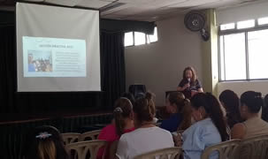
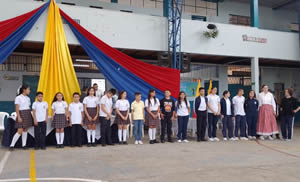
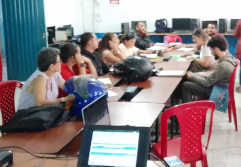
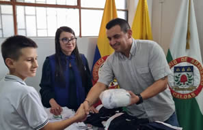
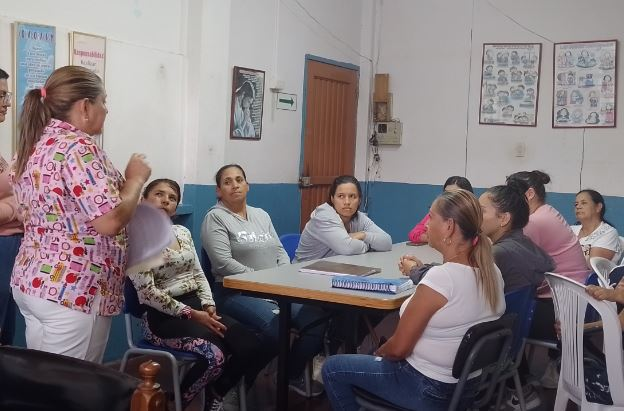

Nos esforzamos para que nuestros estudiantes reciban una educación
de calidad y alcancen sus metas.
NOTICIAS 2024
Marzo 2024
Se realiza Rendición de Cuentas
Con el fin de brindar a la comunidad la información referente a las obras que realizó la Institución Educativa durante la vigencia anterior, el día 29 de febrero se llevó a cabo la rendición de cuentas a través de un evento programado en el aula máxima de la Sede Principal. En esta actividad, el Rector y los líderes de gestión presentaron una serie de diapositivas en las que explicaba detalladamente los eventos, los costos, gastos y resultados obtenidos por el Plantel en las líneas administrativa, directiva, académica y comunitaria.
Publicado: 15 de marzo de 2024.
Izada de bandera Primer Periodo Sede Principal
Como parte del trabajo realizado por los docentes del proyecto de Democracia, y en conmemoración del día Internacional de la Mujer, el 8 de marzo se llevó a cabo la izada de bandera correspondiente al primer periodo
Publicado: 15 de marzo de 2024.
El Maestro o Docente

La Institución Educativa Pío XI del municipio de Aranzazu Caldas,
pretende la formación integral de sus estudiantes en y para la
libertad, como seres auténticos, respetuosos, investigadores,
competentes académica y laboralmente para responder a las exigencias
de la educación superior y exigencias del mundo actual.
Las acciones pedagógicas que promueve la Institución Educativa “Pío
XI favorecen el desarrollo armónico de las capacidades y habilidades
de los estudiantes, en especial la capacidad para la toma de
decisiones, la adquisición de criterios, el trabajo en equipo, la
administración eficiente del tiempo, la asunción de responsabilidades,
la solución de conflictos y problemas, y las habilidades para la
comunicación, la concertación y la participación.
Se esfuerza por ser un lugar de activa fraternidad para todas las
personas de la comunidad educativa; las acoge y las anima para que
construyan con esfuerzo y liderazgo la nueva sociedad.
El directivo Docente
El directivo docente de la Institución Educativa Pio XI es un agente
clave con formación de tipo docente y administrativo en la orientación
y conducción de la Institución en pro de la búsqueda de una Educación
de Calidad. Su liderazgo influye en la efectividad del trabajo en cada
una de las Sedes a su cargo. Cuenta con la autoridad necesaria para
planear, promover y dirigir las innovaciones necesarias para alcanzar
los objetivos planteados en el Proyecto Educativo Institucional PEI
El Administrativo
De acuerdo al modelo activo de participación y construcción, el
perfil del auxiliar administrativo de la I.E Pío XI debe apuntar al
fortalecimiento de las dimensiones y actitudes emprendedoras que le
permitan un desempeño eficiente y eficaz propias de su cargo.
Los Padres de Familia

De acuerdo al modelo activo de participación y construcción, el
perfil de los padres de familia de la I.E Pío XI debe apuntar al
fortalecimiento de las dimensiones y actitudes emprendedoras que le
permitan un desempeño eficiente y eficaz en el acompañamiento en el
proceso de formación de sus hijos.
El Egresado de la Institución
Al finalizar su proceso de formación en la Institución Educativa Pío
XI, el egresado tiene previsto un proyecto de vida guiado hacia la
continuidad en su proceso de formación en la Educación Superior, en
sus estudios en el nivel técnico, tecnológico o profesional en el SENA
o en Entidades Universitarias; en el trabajo para una empresa o
negocio a nivel regional, nacional e internacional; o tambien en la
dirección y labor en una futura empresa que ponga en marcha.Es preciso
mencionar que el egresado de los programas de Articulación: Técnico en
Sistemas y Técnico en Programación de Software puede continuar sus
estudios a nivel tecnológico en el mismo ramo que el Servicio Nacional
de Aprendizaje ofrezca, sin tener que pasar por los requisitos de
admisión, como pruebas, entrevistas, entre otros.